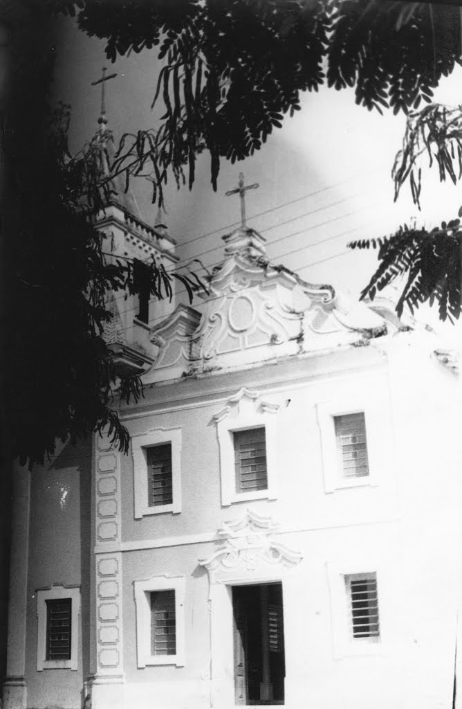

São Domingos do Capim Pará - PA
A origem histórica do município de São Domingos do Capim, localizado no nordeste do estado do Pará, na zona
fisiográfica Guajarina, data dos tempos coloniais, quando as primeiras incursões portuguesas atingiram os
Rios
Guajará, Guamá e Capim.
Desconhece-se, precisamente, a época em que teve início o primeiro núcleo populacional da cidade. Sabe-se,
porém
que, em 1758, já existia na localidade, um pequeno povoado, o qual, nesse ano, foi elevado à freguesia com o
nome de São Domingos da Boa Vista, por Ato de Francisco Xavier de Mendonça Furtado, irmão de Sebastião José
de
Carvalho, Marquês de Pombal. Nessa condição, entrou para a Independência.
Na divisão da província em termos e comarcas, ocorrida em 1833, a então freguesia passou a integrar o
município
da capital, donde foi desmembrada. Os seus limites iam até o igarapé Jurujaia, afluente esquerdo do Rio
Guamá.
Com o advento da República, em 1890, a sede da antiga freguesia de São Domingos da Boa Vista foi elevada à
categoria de vila. Ano em que, o seu território constituiu-se em município, cuja instalação ocorreu em 1891.
O município então criado, sofreu diversas modificações em sua nomenclatura. Em 1932, chamou-se São Domingos
de
Capim. Onze anos depois, simplesmente Capim. Posteriormente, readquiriu sua denominação anterior com a qual
permanece até os dias atuais.
Igreja Matriz em São Domingos do Capim.
Segundo Th. Sampaio, Capim é topônimo de origem tupi e significa “a folha muda, fria, a grama”.
Os habitantes locais são chamados “capinenses”.
Gentílico: capinense
Formação Administrativa
Distrito criado com a denominação de São Domingos da Boa Vista, em 1758, no município de Belém.
Elevado à categoria de vila com a denominação de São Domingos da Boa Vista, por Decreto nº 236, de 09-12-1890,
desmembrado de Belém. Constituído de 3 distritos: São Domingos da Boa Vista, Bujaru e Capim. Instalado em
25-01-1891.
Em divisão administrativa referente ao ano de 1911, o município é constituído de 3 distritos: São Domingos da
Boa Vista, Bujaru e Capim.
Pelo decreto estadual nº 720, de 19-08-1932, a vila de São Domingos da Boa Vista passou a denominar-se São
Domingos do Capim.
Em divisões territoriais datadas de 31-XII-1936 e 31-XII-1937, o município já denominado São Domingos do Capim
aparece constituído de 5 distritos: São Domingos do Capim, Badajós, Bujaru, Capim e Guajara-Açu.
Pelo decreto-lei estadual nº 2972, de 31-03-1938, é extinto os distritos de Bujaru e Guajapara-Açu, sendo seus
territórios anexados ao distrito sede de São Domingos do Capim.
Pelo decreto-lei estadual nº 4505, de 30-12-1943, o município de São Domingos do Capim passou a denominar-se
Capim. Sob o mesmo decreto desmembra do município de Capim os distritos de Bujaru e Guajará-Açu. Para formar o
novo município de Bujaru.
Em divisão territorial datada de 1-VII-1950, o município já denominado Capim é constituído do distrito sede.
Assim permanecendo em divisão territorial datada de 1-VII-1960.
Pela lei estadual nº 2160, de 10-01-1961, o distrito de Capim voltou a denominar-se São Domingos do Capim.
Pela lei estadual nº 2460, de 29-12-1961, é criado o distrito de São Pedro do Capim e anexado ao município de
São Domingos do Capim.
Em divisão territorial datada de 31-XII-1963, o município é constituído de 2 distritos: São Domingos do Capim e
São Pedro do Capim.
Pela lei estadual nº 3225, de 04-01-1965, desmembra do município de São Domingos do Capim o distrito de
Paragominas. Elevado à categoria de município.
Pela lei estadual nº 4649, de 09-07-1976, é criado o distrito de Rondon e anexado ao município de São Domingos
do Capim.
Em divisão territorial datada de 1-I-1979, o município, é constituído de 3 distritos: São Domingos do Capim,
Rondon e São Pedro do Capim.
Pela lei estadual nº 5027, de 13-05-1982, desmembra do município de São Domingos do Capim o distrito de Rondon.
Elevado à categoria de município com a denominação de Rondon do Pará.
Em divisão territorial datada de 15-VIII-1988, o município é constituído do distrito sede.
Assim permanecendo em divisão territorial datada de 2005.
Alterações toponímicas municipais:
São Domingos da Boa Vista para São Domingos do Capim alterado, pelo decreto estadualnº 720, de 19-08-1932.São
Domingos do Capim para Capim alterado, pelo decreto-lei Estadual nº 4505, de 30-121943.Capim para São Domingos
do Capim alterado, pela lei estadual nº 2160, de 10-01-1961.